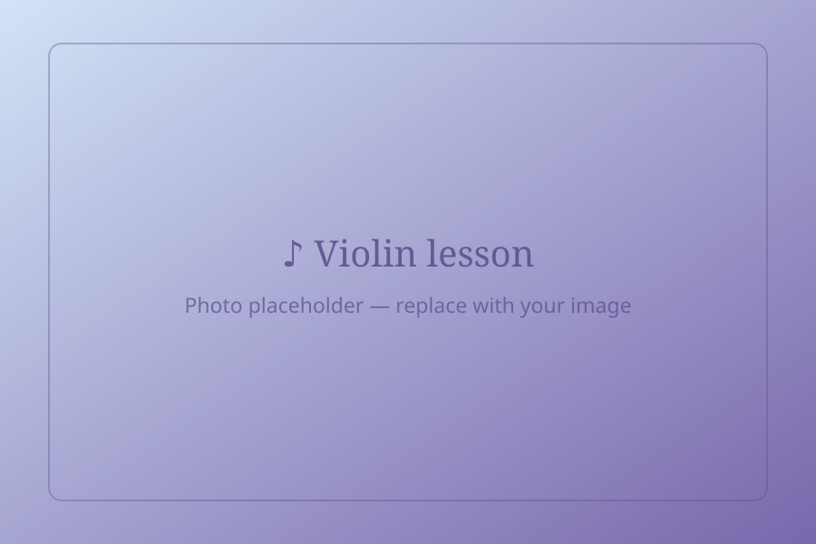
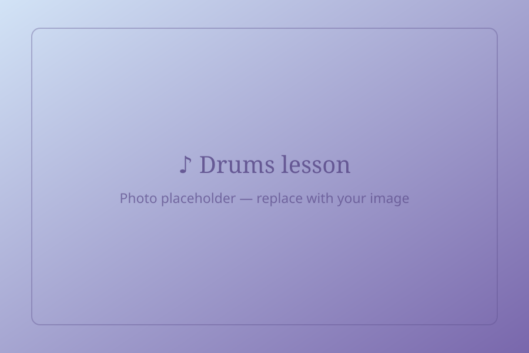
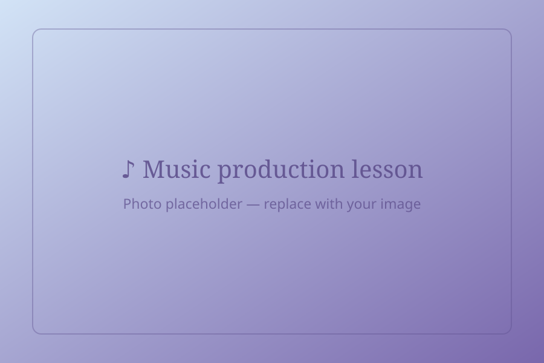
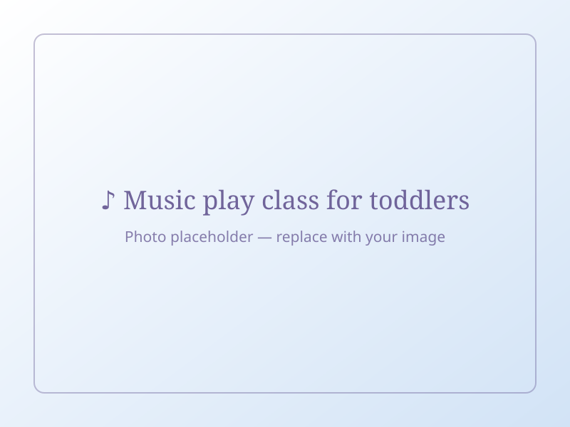

Piano
Acoustic grand and digital pianos. Classical, jazz and pop repertoire; exam preparation on request.
Every Tonika student combines an instrument with a direction. Three career paths for ages 5 and up, and a bright early-years programme for the youngest musicians.
Acoustic grand and digital pianos. Classical, jazz and pop repertoire; exam preparation on request.

Acoustic, electric, classical and bass guitar. Chords, fingerstyle, improvisation and reading.

Healthy technique, breathing, ear training, interpretation and microphone skills.

Classical foundation with folk and film music along the way. Instruments in child sizes available.

Groove, coordination and reading on acoustic and electronic kits. Perfect for the Band path.

DAW basics, recording, mixing and beat-making in our studio. Pairs with the Composer path.
Each path includes weekly individual instrument lessons. The difference is where the path leads.
Instrument + music theory
For students who want to master their instrument and understand the music behind it. Ideal preparation for music school entrance exams and grade certificates.
Instrument + band playing + studio recording
For those who want to play with others. Students are grouped into bands by age and level, rehearse weekly and record in our professional studio.
Instrument + songwriting
For creative minds who hear their own music. Learn harmony, form, lyric writing and arranging – and finish real songs, from idea to demo.
Music for the very youngest – with a parent, through play.
Before a child picks up an instrument, they need to feel rhythm, pitch and joy in music. Little Tonika is a group programme for babies and toddlers with a parent or carer, led by a specialist in early-childhood music education.
Groups of up to 8 children · 30–40 minutes · weekly
Book a Free Trial Class
| Format | Duration | Recommended for | Price / month |
|---|---|---|---|
| Individual lesson | 30 min | Ages 5–8, beginners | [price] PLN |
| Individual lesson | 45 min | Ages 9+, intermediate | [price] PLN |
| Individual lesson | 60 min | Advanced, adults | [price] PLN |
| Band rehearsal (add-on) | 60 min | Band Musician path | [price] PLN |
| Little Tonika group | 30–40 min | Ages 0–5 with parent | [price] PLN |
Yes. Paths are reviewed each semester with your teacher, and many students move from Solo to Band or add Composer once they feel ready.
By age and level, in groups of 3–5. If there is no suitable band yet, the teacher runs duo sessions until one forms.
Students record one or two songs with a sound engineer, learn microphone technique and receive a mixed track to keep.
Not the way we teach it – it is always tied to the pieces you are playing and includes ear training, rhythm games and improvisation.